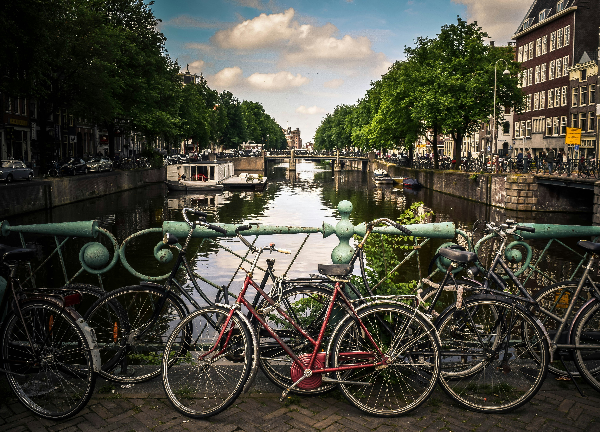
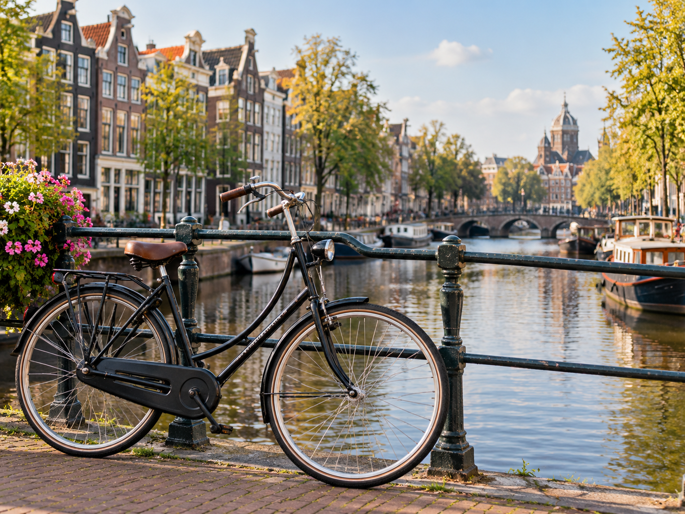

1
Check your bike
Tires, brakes and lights in a few minutes.

Explore the city.
Feel the freedom.
Ride with confidence.
Get StartedA simple guide for visitors and newcomers who want to discover Amsterdam by bike. Cycling is an important part of everyday life in the city, but cycling in a busy city can feel confusing when you are not familiar with the rules. Our website gives you simple and practical information to help you prepare for your ride.
1
Tires, brakes and lights in a few minutes.
2
Bike lanes, signs and traffic lights.
3
City bike, e-bike or folding bike.
4
Lock, hand signals and no phone.

See Amsterdam from a different perspective as you cycle through its streets and along its canals. Take your time, enjoy the city, and stay aware of the people around you. With a little preparation and knowledge, you can feel more comfortable and confident while cycling.